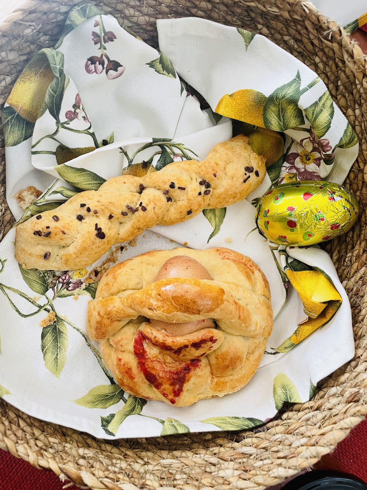

Scarcelle
Ingredients
4×
- 500 g di farina
- 120 g di zucchero
- 2 uova
- 100 ml di olio di semi
- 100 ml di latte
- 1 bustina di lievito per dolci
- la scorza grattugiata di 1 limone
- 1 uovo sodo
- 1 tuorlo
- gocce di cioccolato
- marmellata

Preparazione
Passo 1
Impastare 500 g di farina con 120 g di zucchero, 2 uova, 100 ml di olio di semi, 100 ml di latte, 1 bustina di lievito per dolci e la scorza grattugiata di 1 limone, fino ad ottenere un impasto liscio.
Passo 2
Formare dei cordoni, intrecciarli e dare la forma desiderata (treccia, cestino, cuore). Su ogni scarcella incastrare 1 uovo sodo con il guscio, fissandolo con due strisce di impasto.
Passo 3
Spennellare con 1 tuorlo e decorare con gocce di cioccolato o un po’ di marmellata.
Passo 4
Infornare 25min a 180ºC, fino a doratura.